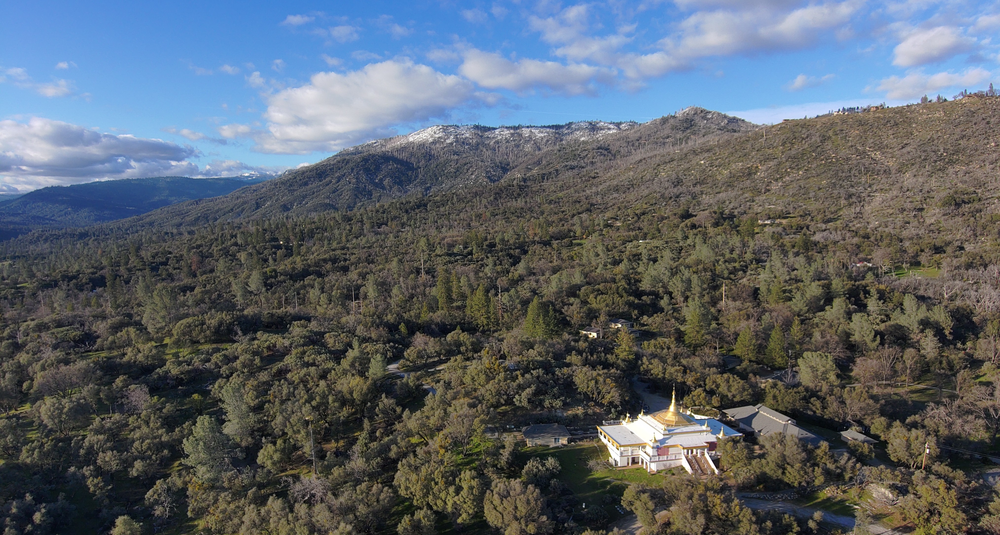

My Blog
Entry 1 - Jan 22nd 2025
The future
What is so special about the future that many people dream about? I wanted to start my blog with this question. Why it's the future so relevant for some people? Is it because we are not comfortable the way we are and we urgently seek something else? Or are we trying to clinch our thirst in a bucket full of desires? Or are we indeed looking beyond our limits? Technology has been the closest thing that civiliztion has experience of traveling into the future and into the impossible. And, is not the future the pursue of something much better which is workth pursuing? And is it true that the future could bring fairness to society?
Starting my career in technology in Madrid, Spain, and then moving to Sillicon Valley I consider the future as the purpose of waking up every morning. The meaning of trying to write your own story. That story lead me to Drones back when I was 20 years old. And 9 years later, I've been involved in some of the most exciting projects I ever dreamed of. A small drone start up which pursues to lead critical infraestructure inspection in Spain and Europe. I also worked building a "Flying Car" company which gave me experience in the Valley as well as long lasting friends. And now, at Skydio. One of the leading drone companies in the United States and in the world.
After walking my path I became to realize that you have to cultivate the future by purely attending the present. Aside from that experience in the drone industry, I started a small business idea, got married and now I'm waiting my first baby. I also went back to school to continue my education in the US. So the future for me is the desire to grow and change in order to be my best version. And push as hard as I can to make life worth living.
To improve is to change, to be perfect is to change often
-W.Churchill